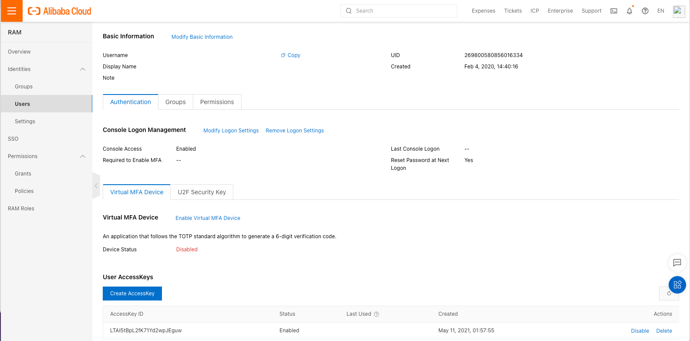
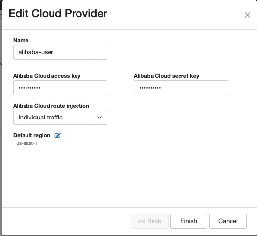
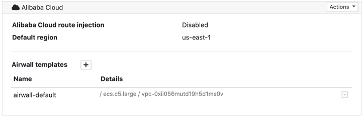
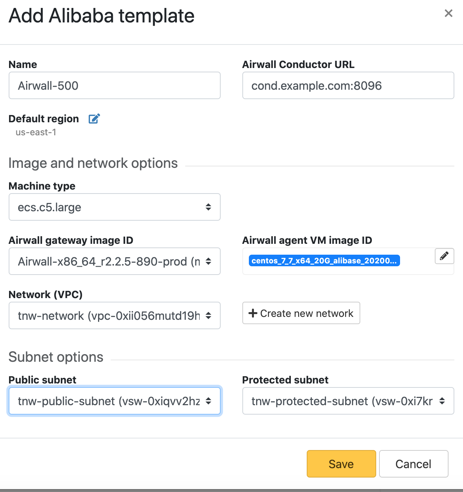

Alibaba Cloud – Set up an Airwall Gateway
Once you've set up the Conductor to create Airwall Gateways on Alibaba Cloud, it's easy to create additional Airwall Gateways.
Prerequisites
- Required licenses
- An Airwall 300v license for each virtual Airwall Gateway you are setting up.
- Supported versions
- Conductor v2.2.8 and later
To deploy a cloud Airwall Gateway on Alibaba Cloud, you need the following:
- An Alibaba Cloud account, and your access and secret keys.
- The address and port of your Conductor.
- One or more Airwall Gateway image files (from the Alibaba Cloud marketplace, or from Tempered Fulfillment uploaded to the Alibaba Cloud console).
Deploy an Airwall Gateway on Alibaba Cloud
Here’s how to deploy an Airwall Gateway to your Alibaba Cloud account:
Step 1: Add Alibaba Cloud as a provider to your Conductor
Set up Alibaba Cloud as a cloud provider in your Conductor to make deploying cloud Airwall Gateways and High-availability standby Conductor easier.
To add Alibaba Cloud as a provider, you need to:
- Get Alibaba Cloud Access Key credentials
- Set up Alibaba Cloud as a cloud provider in the Conductor
Get Alibaba Cloud Access Key credentials
Alibaba Cloud accounts and RAM users have identities. Alibaba Cloud services use credentials for authentication.
For example, Alibaba Cloud services use passwords for authentication when you log on to a console. In this case, your email and password are the credentials.
Alibaba Cloud uses AccessKey pairs for authentication when you make API calls. An AccessKey pair consists of an AccessKey ID and an AccessKey secret. For the most up-to-date instructions, see Alibaba Cloud API overview - Alibaba Cloud API overview| Alibaba Cloud Documentation Center
- Create or go to your Alibaba Cloud RAM account. For details, see Create a RAM user - Getting Started| Alibaba Cloud Documentation Center, or the most recent content from Alibaba Cloud.
- To get your Alibaba Cloud AccessKey pair, in Alibaba Cloud go to the RAM console.
-
Under Users, scroll down to User
AccessKeys. Create a new Access Key by selecting
Create AccessKey.

- Note down your AccessKey ID and secret.
Set up Alibaba Cloud as a cloud provider
- In the Conductor, select the gear icon in the upper-right to access the Settings page.
- Select the Cloud providers tab and click + Add Cloud Providers.
- In the Add Cloud Providers. dialog, select the check-mark to the right of Alibaba Cloud and click Next
-
Enter your Alibaba Cloud access and
secret keys, and choose an option for Alibaba
Cloud route injection.

-
The Alibaba Cloud route injection setting determines
how new routes are added to the Alibaba Cloud routing table. The routes are
for traffic on your protected overlay network between protected devices and
the Airwall Gateway. Here are the recommended settings depending on your deployment details:
- If you are using a Airwall Relay, set to Disabled.
- If you want to handle traffic for devices individually, set to Individual traffic.
- If you want one route to send all traffic to the overlay port on the
Airwall Gateway, set to All traffic.Note: All traffic is effectively ‘full tunnel’ mode. With Individual traffic, you could add routes that send traffic around the Airwall Gateway.
- By Default region, select the Refresh icon to get the list of regions from the provider, and then select your default region.
-
Click Finish
Your Alibaba Cloud provider is displayed in the Configured Cloud Providers list.

Step 2: Create an Airwall Gateway template on Alibaba Cloud
- In the Conductor, select the gear icon in the upper-right to access the Settings page, and go to the Cloud providers tab.
- In the Configured Cloud Providers list, under Alibaba Cloud, select the + next to Airwall templates.
-
Give your template a descriptive name, and then select the Image and
network options you want for Airwall Gateways
created with this template.
Note: To select subnets, you need to select a Network (VPC) first.
- Select Save
Step 3: Deploy Airwall Gateways on Alibaba Cloud
You must Set up Alibaba Cloud as a cloud provider before you can add an Airwall Gateway in the Conductor
-
On the Airwalls
page, (or in Conductor
Settings, under Cloud providers),
click Create cloud Airwall, and select Alibaba
Cloud Airwall.

- In v2.2.8 and later, select the type of Airwall to create, and select Next.
-
In v2.2.8 and later, if you want to use a template to create the Airwall Gateway,
select the template, select Next, and then give the Airwall Gateway a
descriptive name. You can then skip to the next step.
To continue without a template and enter the information manually, just select Next.
- Click Next.
- Check the summary. If everything is correct, click Create cloud Airwall.
- Click Finish. It may take up to 5 minutes for Alibaba Cloud to create the Airwall Gateway.
Step 4: (Optional) Change your Elastic IP Bandwidth Setting
The Airwall Gateway images on Alibaba Cloud use the following default values for elastic IP:
- Bandwidth: 5 Mbps
- InternetChargeType: PayByTraffic
- InstanceChargeType: Postpaid (Pay-As-You-Go)
You can change the bandwidth value once the Airwall Gateway is deployed, however be aware that the bandwidth rate may increase when you edit this value. For more information on how to change the bandwidth, see Alibaba help.